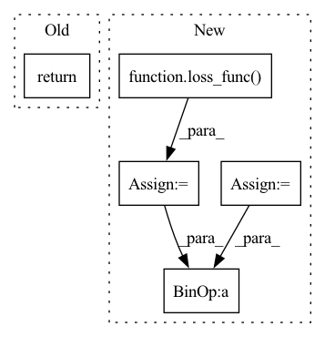

Pattern ID :23157

Before Change
tail_logits = self.tail_clsf(sequence_output).squeeze(-1)
head_probs = head_logits + (1 - attention_masks) * -10000
tail_probs = tail_logits + (1 - attention_masks) * -10000
return head_probs, tail_probs
After Change
head_logits = self.head_clsf(sequence_output).squeeze(-1)
tail_logits = self.tail_clsf(sequence_output).squeeze(-1)
loss_func = self.circle_loss
head_loss = loss_func(head_logits, head_labels)
tail_loss = loss_func(tail_logits, tail_labels)
return {"loss": head_loss + tail_loss}
def fast_inference(self, sequence_output, attention_masks, hint_ids,
cross_attention_masks):
In pattern: SUPERPATTERN
Frequency: 3
Non-data size: 5
Instances
Fragment ID: 73117193
Project Name: modelscope/modelscope
Commit Name: dfd1058d4550d595ba736fce9d87dfe2fe148961
Time: 2023-03-02
Author: fubang.zfb@alibaba-inc.com
File Name: modelscope/models/nlp/bert/siamese_uie.py
M Class Name: SiameseUieModel
N Class Name: SiameseUieModel
M Method Name: forward(7)
N Method Name: forward(5)
M Parent Class: BertPreTrainedModel
N Parent Class: BertPreTrainedModel
M File Name: modelscope/models/nlp/bert/siamese_uie.py
N File Name: modelscope/models/nlp/bert/siamese_uie.py
M Start Line: 89
M End Line: 101
N Start Line: 90
N End Line: 123
'>
Before Change
super(fftLoss, self).__init__()
def forward(self, predictions, targets):
return torch.nn.MSELoss(torch.fft.fft(predictions, dim=1), torch.fft.fft(targets, dim=1))
class RhythmNetLoss(nn.Module):
def __init__(self, weight=100.0):
After Change
super(fftLoss, self).__init__()
def forward(self, predictions, targets):
neg = neg_Pearson_Loss(predictions, targets)
loss_func = nn.L1Loss()
predictions = torch.fft.fft(predictions, dim=1,norm="forward")
targets = torch.fft.fft(targets, dim=1,norm="forward")
loss = loss_func(predictions, targets)
return loss + neg
class RhythmNetLoss(nn.Module):
'>
Fragment ID: 73117201
Project Name: tvs-ai/pytorch_rppgs
Commit Name: 5f7535fe7cbaa45503473022cacefbe38c9ffb3c
Time: 2022-10-07
Author: kwelcomm@gmail.com
File Name: loss.py
M Class Name: fftLoss
N Class Name: fftLoss
M Method Name: forward(3)
N Method Name: forward(3)
M Parent Class: nn.Module
N Parent Class: nn.Module
M File Name: loss.py
N File Name: loss.py
M Start Line: 120
M End Line: 120
N Start Line: 121
N End Line: 126
'>
Before Change
super(fftLoss, self).__init__()
def forward(self, predictions, targets):
return torch.nn.MSELoss(torch.fft.fft(predictions, dim=1), torch.fft.fft(targets, dim=1))
class RhythmNetLoss(nn.Module):
def __init__(self, weight=100.0):
After Change
super(fftLoss, self).__init__()
def forward(self, predictions, targets):
neg = neg_Pearson_Loss(predictions, targets)
loss_func = nn.L1Loss()
predictions = torch.fft.fft(predictions, dim=1,norm="forward")
targets = torch.fft.fft(targets, dim=1,norm="forward")
loss = loss_func(predictions, targets)
return loss + neg
class RhythmNetLoss(nn.Module):
'>
Fragment ID: 73117191
Project Name: tvs-ai/pytorch_rppgs
Commit Name: 5038b3058e9d72d3776d03fdb49feda22ce48213
Time: 2022-12-13
Author: forownsake@gmail.com
File Name: loss.py
M Class Name: fftLoss
N Class Name: fftLoss
M Method Name: forward(3)
N Method Name: forward(3)
M Parent Class: nn.Module
N Parent Class: nn.Module
M File Name: loss.py
N File Name: loss.py
M Start Line: 120
M End Line: 120
N Start Line: 121
N End Line: 126